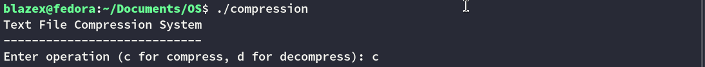

COMPRESSION &
DECOMPRESSION
Process Walkthrough
Compression Workflow
Execution Step

File Input Path

File Output Path
Compression Process

Compression Summary
Result

Decompression Workflow
Execution Step

File Input Path

File Output Path

Decompression Process

Decompression Summary